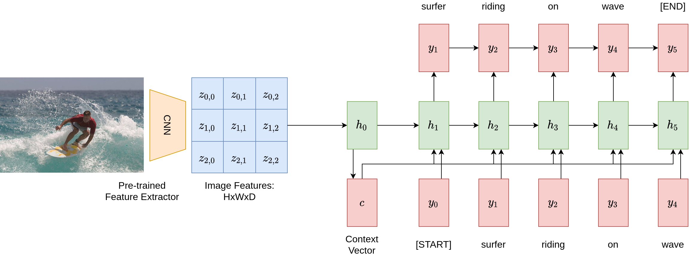
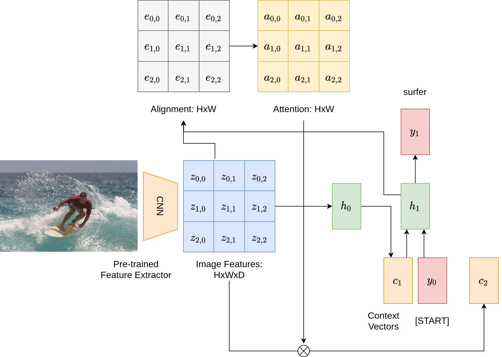
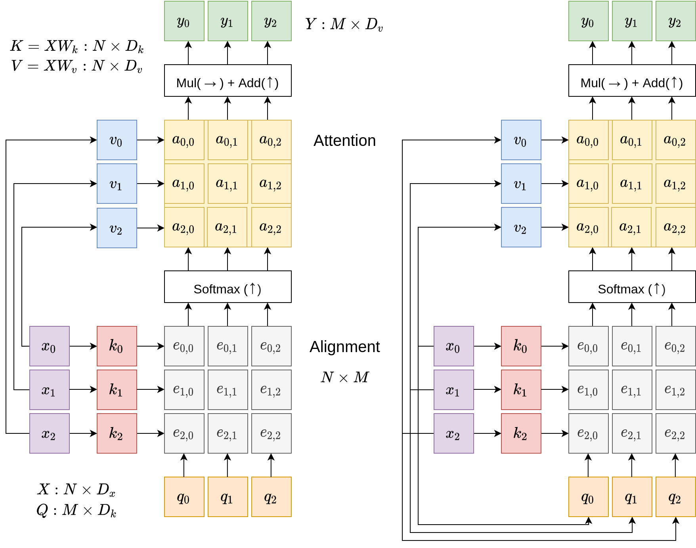
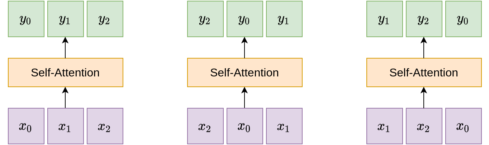
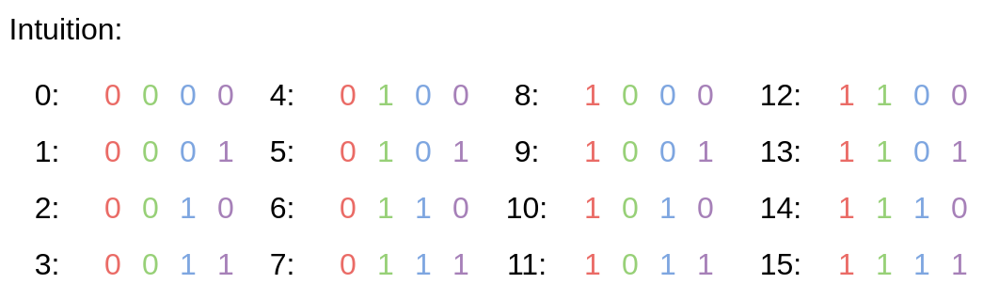
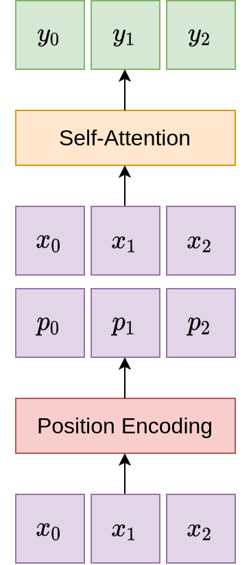
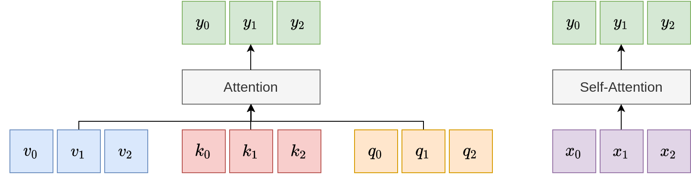
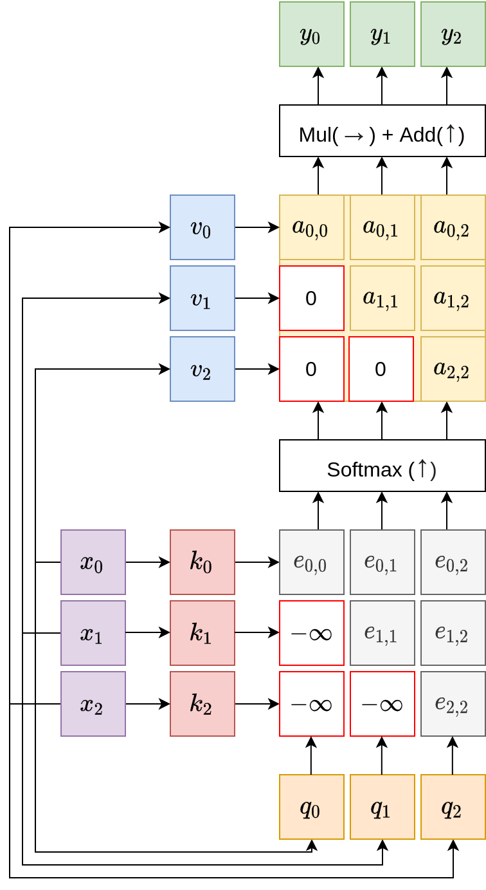
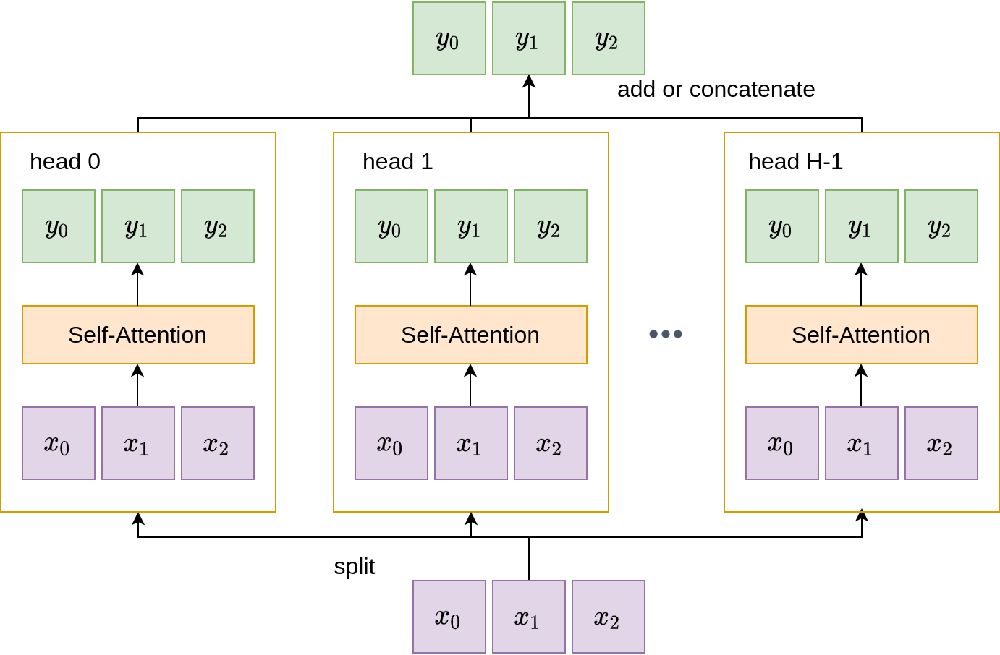

Table of Contents:
We discussed fundamental workhorses of modern deep learning such as Convolutional Neural Networks and Recurrent Neural Networks in previous sections. This section is devoted to yet another layer – the attention layer – that forms a new primitive for modern Computer Vision and NLP applications.
To motivate the attention layer, let us look at a sample application – image captioning, and see what’s the problem with using plain CNNs and RNNs there.
The figure below shows a pipeline of applying such networks on a given image to generate a caption. It first uses a pre-trained CNN feature extractor to summarize the image, resulting in an image feature vector \(c = h_0\). It then applies a recurrent network to repeatedly generate tokens at each step. After five time steps, the image captioning model obtains the sentence: “surfer riding on wave”.

What is the problem here? Notice that the model relies entirely on the context vector \(c\) to write the caption – everything it wants to say about the image needs to be compressed within this vector. What if we want to be very specific, and describe every nitty-gritty detail of the image, e.g. color of the surfer’s shirt, facing direction of the waves? Obviously, a finite-length vector cannot be used to encode all such possibilities, especially if the desired number of tokens goes to the magnitude of hundreds or thousands.
The central idea of the attention layer is borrowed from human’s visual attention system: when humans like us are given a visual scene and try to understand a specific region of that scene, we focus our eyesight on that region. The attention layer simulates this process, and attends to different parts of the image while generating words to describe it.
With attention in play, a similar diagram showing the pipeline for image captioning is as follows. What’s the main difference? We incorporate two additional matrices: one for alignment scores, and the other for attention; and have different context vectors \(c_i\) at different steps. At each step, the model uses a multi-layer perceptron to digest the current hidden vector \(h_i\) and the input image features, to generate an alignment score matrix of shape \(H W\). This score matrix is then fed into a softmax layer that converts it to an attention matrix with weights summing to one. The weights in the attention matrix are next multiplied element-wise with image features, allowing the model to focus on regions of the image differently. This entire process is differentiable and enables the model to choose its own attention weights.

While the previous section details the application of an attention layer in image captioning, we next present a more general and principled formulation of the attention layer, de-contextualizing it from the image captioning and recurrent network settings. In a general setting, the attention layer is a layer with input and output vectors, and five major operations. These are illustrated in the following diagrams.

As illustrated, inputs to an attention layer contain input vectors \(X\) and query vectors \(Q\). The input vectors, \(X\), are of shape \(N D_x\) while the query vectors \(Q\) are of shape \(M D_k\). In the image captioning example, input vectors are the image features while query vectors are the hidden states of the recurrent network. Outputs of an attention layer are the vectors \(Y\) of shape \(M D_k\), at the top.
The bulk of the attention operations are illustrated as the colorful grids in the middle, and contains two major types of operations: linear key-value maps; and align & attend operations that we saw earlier in the image captioning example.
Linear Key and Value Transformations. These operations are linear transformations that convert the input vectors \( X\) to two alternative set of vectors:
By applying these fully-connected layers on top of the inputs, the attention model achieves additional expressivity.
Alignment. Core to the attention layer are two fundamental operations: alignment, and attention. In the alignment step, while more complex functions are possible, practitioners often opt for a simple function between vectors: pairwise dot products between key and query vectors.
Moreover, for vectors with a larger dimensionality, more terms are multiplied and summed in the dot product and this usually implies a larger variance. Vectors with larger magnitude contribute more weights to the resulting softmax calculation, and many terms usually receive low attention. To deal with this issue, a scaling factor, the reciprocal of \(\), is often incorporated to reduce the alignment scores. This scaling procedure reduces the effect of large magnitude terms, so that the resulting attention weights are more spread-out. The alignment computation can be summarized as the following equation:
\[ e_{i,j} = \frac{q_j \cdot x_i}{\sqrt{D_x}} \]
Attention. The attention matrix is obtained by applying the softmax function column-wise to the alignment matrix.
\[ \mathbf{a} = \text{softmax}(\mathbf{e}) \]
The output vectors are finally calculated as multiplications of the attention matrix and the input vectors:
\[ y_j = \sum_{i} a_{i,j} x_i \]
While we explain the general attention layer above, the self-attention layer refers to the special case where similar to the key and value vectors, the query vectors \(Q\) are also expressed as a linear transformation of the input vectors: \(Q = X W_q\) where \(W_q\) is of shape \(D_x D_k\). With this expression of query vectors as a linear function of the inputs, the attention layer is self-contained. This is illustrated on the right of the figure above.
Permutation Invariance. It is worth noting that the self-attention layer is invariant to the order of the input vectors: if we apply a permutation to the input vectors, the outputs will be permuted in exactly the same way. This is illustrated in the following diagram.

Positional Encoding. While the self-attention layer is agnostic to the ordering of inputs, practical applications often require some notion of ordering. For example, in natural language sequences, the relative ordering of words often plays a pivotal role in differentiating the meaning of the entire sentence. This necessitates the inclusion of a positional encoding component into the self-attention module, to endow the model with the ability to determine the positions of its inputs. A number of desiderata are needed for this component:
While there exists a number of functions that satisfy the above criteria, a commonly used method makes use of mixed sine and cosine values. Concretely, the encoding function looks like the following:
\[ p(t) = [\sin(w_1 \cdot t), \cos(w_1 \cdot t), \sin(w_2 \cdot t), \cos(w_2 \cdot t), \cdots, \sin(w_{d/2} \cdot t), \cos(w_{d/2} \cdot t)] \]
where the frequency \(w_k = \). What does this function encode? The following diagram is an intuitive explanation of the same phenomenon, but in the binary domain:

The frequencies \(w_k\) are varied, to represent the relative positions of the inputs, in a similar vein as the 0s and 1s in the binary case. In practice, the positional encoding component concatenates additional information to the input vectors, before they are passed to the self-attention module:

A Comparison Between General Attention vs. Self-Attention. The general attention layer has access to three sets of vectors: key, value, and query vectors. In comparison, the self-attention layer is entirely self-enclosed, and instead parameterizes the three sets of vectors as linear functions of the inputs.

While the positional encoding layer integrates some positional information, in more critical applications, it may be necessary to distill into the model a clearer idea of relative input orderings and prevent it from looking-ahead at future vectors. To this end, the masked self-attention layer is created: it explicitly sets the lower-triangular part of the alignment matrix to negative infinity values, to ignore the corresponding, future vectors while the model processes earlier vectors.

Yet another possibility to increase the expressivity of the model is to exploit the notion of a multi-head attention. Instead of using one single self-attention layer, multi-head attention utilizes multiple, parallel attention layers. In some cases, to maintain the total computation, the key and value dimensions \(D_k, D_v\) may be reduced accordingly. The benefit of using multiple attention heads is to allow the model to focus on different aspects of the input vectors.

To summarize this section,